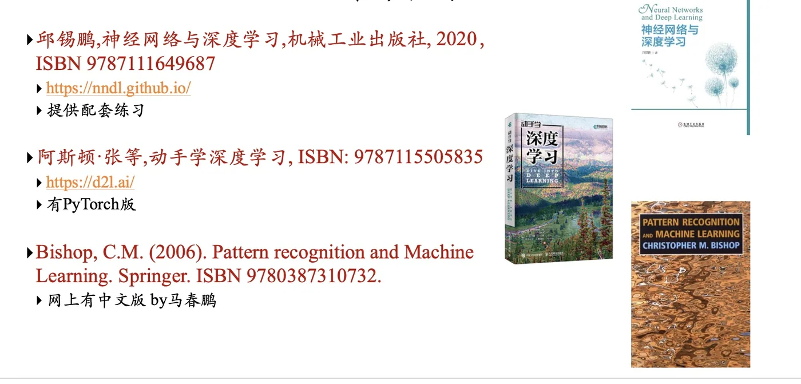

计算机视觉 · 第 1 章 绪论
1.5 课程安排与学习资源
这一节是课程说明：学什么、怎么考、用什么书、到哪里继续学。表面上是行政信息，实际上它给出了这门课的地图——把课件的章节顺序、参考教材的章节结构，以及该领域的会议期刊体系对照着看，就知道该往哪个方向使劲。
1. 课程内容安排
课件列出的主要内容依次是：
- 基本图像处理技术；
- 特征检测与匹配；
- 前馈神经网络；
- 卷积神经网络；
- 循环神经网络；
- 人脸识别；
- 前沿技术翻转课堂。
这份顺序不是随意的，它对应一条完整的链路：先学会处理像素（图像处理基础、边缘检测），再学会提取稳定的特征（特征检测与匹配），然后换成让网络自己学特征（前馈网络 → 卷积网络 → 循环网络），最后把这一整套用在一个人脸识别的完整任务上。第 3 章之后的每一章都能挂在前一章上，学的时候不妨经常回头对一下这条链。最后的「翻转课堂」则把前沿技术交给同学自己讲。
2. 考核方式
课程分理论课与实验课两条线，各自独立考核。
| 环节 | 结课时间 | 构成 |
|---|---|---|
| 理论课 | 第 11 周 | 平时成绩 30% ＋ 期末考试（闭卷）70% |
| 实验课 | 第 12 周 | 4 次实验课，各占 25% |
课件给出的考试时间是第 13 周周三（2025 年 11 月 26 日）晚，编程语言统一用 Python。实验课四次各占 25%、没有单列的期末实验，意味着每一次实验都不能掉队——这一点在安排时间时要特别注意。
3. 推荐教材
课件推荐了三本主教材：
- 邱锡鹏，《神经网络与深度学习》，机械工业出版社，2020，ISBN 9787111649687。网址 https://nndl.github.io/ ，提供配套练习；
- 阿斯顿·张等，《动手学深度学习》，ISBN 9787115505835。网址 https://d2l.ai/ ，有 PyTorch 版；
- Bishop, C. M. (2006). Pattern Recognition and Machine Learning. Springer. ISBN 9780387310732。网上有中文版（by 马春鹏）。

三本书的定位并不重合。《神经网络与深度学习》以中文系统讲解神经网络与深度学习的原理，推导完整，适合配合课程主线阅读；《动手学深度学习》偏实操，代码与讲解同步，适合做实验时对照；Bishop 的书则从概率与统计的角度处理模式识别，是补数学基础绕不开的一本。
此外还推荐了两本优化方向的参考书，它们是理解「网络为什么能训练出来」这个问题的背景：
- Wright, S., & Nocedal, J. (1999). Numerical optimization. Springer Science, 35(67-68), 7.
- Boyd, S., & Vandenberghe, L. (2004). Convex optimization. Cambridge university press.
4. 推荐课程与公开材料
如果想在课外系统补一遍，课件推荐了三门公开课：
- 斯坦福大学 CS224n：Deep Learning for Natural Language Processing，https://web.stanford.edu/class/archive/cs/cs224n/cs224n.1194/ 。Chris Manning 主要讲解自然语言处理领域的各种深度学习模型；
- 斯坦福大学 CS231n：Convolutional Neural Networks for Visual Recognition，http://cs231n.stanford.edu/ 。Fei-Fei Li、Andrej Karpathy 主要讲解 CNN、RNN 在图像领域的应用；
- 加州大学伯克利分校 CS 294：Deep Reinforcement Learning，http://rail.eecs.berkeley.edu/deeprlcourse/ 。
其中与这门课关系最直接的是 CS231n——它讲的就是 CNN 与 RNN 在图像上的应用，与本课程第 6、7 章的内容高度重合，可以当作习题和直觉的补充。
中文材料方面还推荐了：
- 林轩田「机器学习基石」「机器学习技法」，https://www.csie.ntu.edu.tw/~htlin/mooc/ ；
- 李宏毅「1 天搞懂深度学习」，http://speech.ee.ntu.edu.tw/~tlkagk/slide/Tutorial_HYLee_Deep.pptx ；
- 李宏毅「机器学习 2020」，https://www.bilibili.com/video/av94519857/ 。
5. 顶级会议与期刊
做这一行迟早要读论文，所以先认门牌。课件给出的分类清单是：
| 方向 | 顶级会议 | 顶级期刊 |
|---|---|---|
| 计算机视觉 | CVPR（每年，约 11 月）、ICCV（奇数年，约 3/4 月）、ECCV（偶数年，约 3/4 月） | TPAMI、IJCV、TIP |
| 综合人工智能 | NeurIPS、ICLR、ICML、AAAI、IJCAI | — |
| 自然语言处理 | ACL、EMNLP、NAACL | — |
| 计算机图形学 | SIGGRAPH、SIGGRAPH Asia | TOG、TVCG |
关于计算机视觉的「三大顶会」有一个容易记混的点：CVPR 每年一次，而 ICCV 与 ECCV 隔年交替——ICCV 在奇数年、ECCV 在偶数年，所以每年都有两次投稿窗口，但具体是哪一个要看年份。会议分级可参考中国计算机学会的目录：https://www.ccf.org.cn/Academic_Evaluation/By_category/ 。
6. 课后练习
课件布置的准备工作有两件，都很实在：
- 熟悉 Python 编程。参考：https://www.runoob.com/python/python-tutorial.html 、http://c.biancheng.net/python/ ；
- 熟悉基本的 Numpy 操作——Numpy 是 Python 中对于矩阵处理很实用的工具包。参考：https://github.com/nndl/exercise 的 chap1_warmup。
第二件事尤其不要跳过。计算机视觉的输入是图像，而在程序里图像就是一个多维数组：灰度图是二维矩阵，彩色图是三维（高 × 宽 × 通道），一批图像则是四维。后面所有网络的前向计算，落到代码上都是数组运算。Numpy 用得熟不熟，会直接决定实验做得顺不顺。
本节小结
- 课程主线：基本图像处理 → 特征检测与匹配 → 前馈神经网络 → 卷积神经网络 → 循环神经网络 → 人脸识别 → 前沿技术翻转课堂，一条「从处理像素到让网络自己学特征」的链路。
- 考核：理论课（第 11 周结课）＝平时 30% ＋ 闭卷期末 70%；实验课（第 12 周结课）＝4 次实验各占 25%；统一使用 Python。
- 主教材三本：邱锡鹏《神经网络与深度学习》、《动手学深度学习》、Bishop 的 Pattern Recognition and Machine Learning；另有 Nocedal 与 Boyd 的优化书作为数学背景。
- 公开课里与本课程最贴近的是斯坦福 CS231n；中文材料推荐林轩田与李宏毅的课程。
- 认准门牌：计算机视觉三大顶会是 CVPR、ICCV、ECCV（后两者隔年交替），顶刊是 TPAMI、IJCV、TIP。
- 开课前的准备：熟悉 Python 与 Numpy——图像在程序里就是多维数组，后面的网络计算全都建立在这个基础之上。